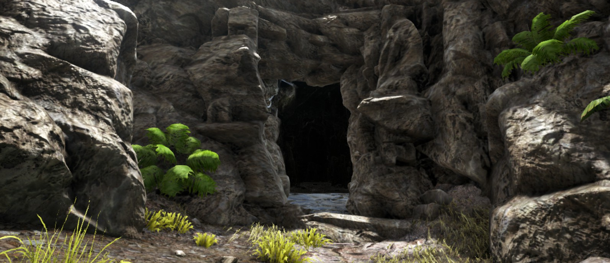
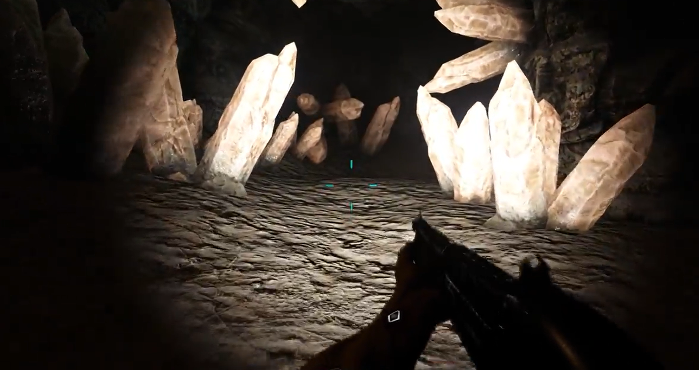
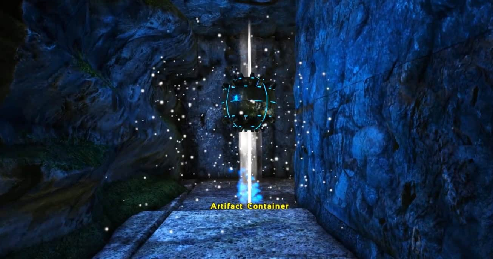

Špilje
Špilje su opasne podzemne lokacije pune agresivnih stvorenja, uskih prolaza i vrijednog loota.
Glavni razlog istraživanja spišlja su Artefakti, posebni predmeti potrebni za prizivanje boss-eva. Osim toga, špilje često sadrže kvalitetne loot crate-ove i rijetke resurse.
Špilje su među najopasnijim mjestima u ARK-u, ali bez njih nije moguće doći do boss-eva i završiti igru.

Opasnosti:
Svaka špilja predstavlja jedinstveni izazov koji se mora preživjeti kako bi došli do artefakta.
To mogu biti jake životinje, ekstremne temperature, otrovni plinovi, podvodni prolazi i iski tuneli za velike dinosaure.
Većina špilja ima više ovih opasnosti i zato je bitno upoznati se s špiljom prije nego uopće krenete unutra.

Savjeti:

Da bi mogli preživjeti špilje, uvijek je potrebno dobro se pripremiti.
Ponesite dobro oružje i oklop, koristite prikladne dinosaure za uske prolaze i uvijek imajte rezervnu opremu.
Također, uvijek se pripremite za povratak ako stvari krenu po zlu.